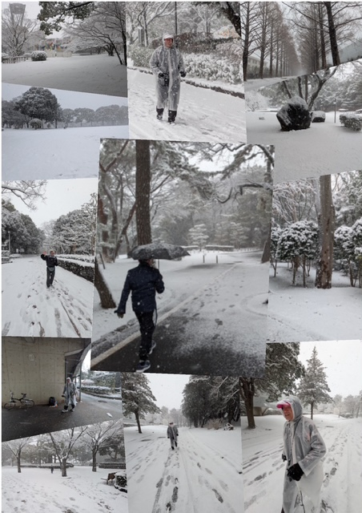

2026-02-08 18:09:30
2026年2月8日（日）平塚総合公園 雪時々 曇り 気温9時－0.7度、14時+0.7度 担当（田中）
| No | 白鷺 | 氏名 | 種目 | タイム | フル百 |
|---|---|---|---|---|---|
| 1 | 19 | 伊藤 晶 | フル | 4:55:48 | 900 |
| 2 | 30 | 竹田 昭彦 | フル | 10:06:37 | 3 |
| 3 | 503 | 池尻 彰 | 20.5km | 4:19:21 | 894 |
| 4 | 317 | 石井 功 | 8.5km | 2:03:00 | 817 |
| 5 | 403 | 飯田 和好 | 5.1km | 1:01:32 | 881 |
| 6 | 98 | 田中 国貞 | 5.1km | 1:40:00 | 746 |
今日の湘南平塚は何年ぶりかの雪、深い所では10㎝も積りました。
そんな天気の中、6名参加で竹田さんはいつものように、夜中３時半スタートで
完走されました。途中、飯田さんから、たい焼きやカップ・ラーメン他の差し入れを
いただきました。ありがとうございました。
